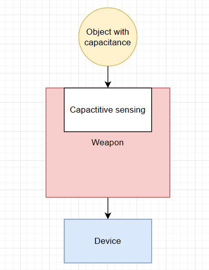
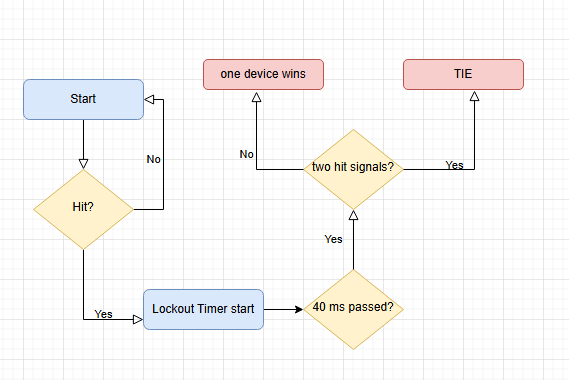
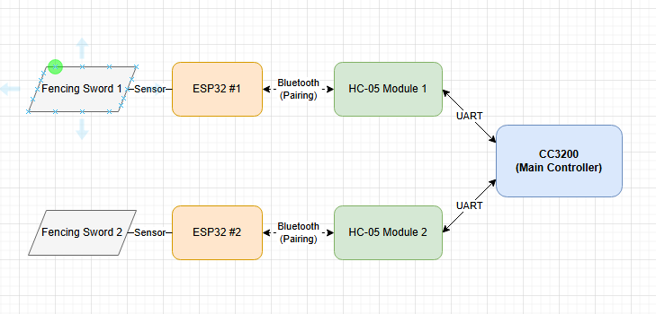

Featured Demo
Bluetooth Fencing Tracker
Project Overview
A budget wireless fencing tracker
The objective of this project was to make a low cost wireless system for electric scoring for fencing. Traditional wired systems consist of a scorebox connected to two reels which are in turn connected to the fencers’ equipment. This system is wireless and relies on bluetooth connection between the scorebox and what we call weaponboxes carried by the fencers themselves to connect their equipment. The weaponboxes replace the heavy and expensive reels and cables in wired systems. When a weaponbox detects a hit it sends a bluetooth message to the scorebox. The scorebox sounds a buzzer when a hit is detected, and adjusts an OLED scoreboard which displays a 3 minute timer and the current score of both fencers. The scoreboard can be manipulated with a TV remote. The TV remote can also be used to upload the scoreboard information to an AWS server. The system currently only supports only one of the three weapons used in olympic fencing, which is epee. The current design could probably be adapted to foil easily but support was not implemented. Sabre fencing is notoriously difficult to support in a wireless system and would require experimentation. The goal of this project was to create a wireless fencing score system on a limited budget to be used by hobbyists.
Details
What this part shows
The video demonstrates how our device can determine hits, while not counting hits that are invalid such as if the tip hits the bellguard of the opponents weapons. You can see when the tip hits the glove, a tone plays.
After the detection is made a bluetooth signal is sent to a central arbitration device (the CC3200) over bluetooth. This will only occur on a valid hit.
Highlight 1: Detects valid hits
Highlight 2: Won't register invalid hits
Highlight 3: Sends data regarding the hits over bluetooth to arbitration device.
Technical Notes
How we detect only valid hits
Because we have no shared ground such as you would with a wired system we have to rely on the change in capacitance when a hit occurs to determine if a hit is valid or not. We have a baseline capacitance value that we measure when the device is turned on, and then we look for changes in that value that would indicate a hit. We also have some additional logic to filter out hits that are likely to be invalid, such as if it happens too quickly after a previous hit.
The capacitance is sensed from the tip of the weapon, so if the tip hits the opponent it will cause a change in capacitance that we can detect. This method is also used in smart phones for touch sensing.
Visual
Capacitive Sensing

-Featured Demo
Tie Demonstration
Details
What this part shows
This video shows that ties can be detected as well. In fencing, a tie occurs when both fencers hit each other within a vert short time frame that's different per weapon. In this video we show a tie for an epee, which is a very tight window of 40 milliseconds.
When both weapons hit within this window, the abritration device makes a higher tone and shows all LED lights and updates the score accordingly as can be seen in the video.
Technical Notes
Architecture / explanation
The lockout flowchart diagram shows how the arbitration device determines which hit to register when both fencers hit within the tie window. When the CC3200 receives a hit, it starts a timer for the tie window. If another hit is received from the other fencer within that window, it registers a tie. If no other hit is received, it registers a normal hit for the first fencer.
Bluetooth can make this process difficult as there can be some variability in the timing of when the hits are received. Things like signal strength and interference can affect timing so we try to make the conditions each bluetooth device is in as similar as possible to try to minimize this variability.
Visual
Lockout Flowchart

Featured Demo
Score/Timer manual updating
Details
What this part shows
This video shows the manual score and timer updating features of our system. On the left you can see the buttons that the referee can use to manually update the score and timer using the remote. Our system allows the user to set the bout timer, start and stop the timer, or completely restart the system.
This uses an Infrared remote and receiver system, and the remote has buttons for each of these functions. This allows the referee to have more control over the bout and be able to make adjustments as needed.
Details
What this part shows
This videos shows how through the remote we can update scores and send them to AWS to be displayed on a website in real time. In the video you can see the score being updated on the AWS dashboard as the score is updated on the remote. This could be useful for allowing spectators or tournament organizers to easily keep track of scores and timers without needing to be right next to the scoring box. It also allows for easier record keeping and data analysis after the bout is over.
Featured Demo
AWS Integration
Featured Demo
Weapon devices
Details
What this part shows
Here we take a look at the weapon devices themselves. They're built inside a 3D printed housing that is meant to be placed in the fencer's pocket. It is connected via body cable to the weapon. It features a button to calibrate the basline capacitance (in the video I kept saying configure but I meant calibrate) and a button to power the device. There is an LED to indicate which part of calibration the device is in, (Calibrating touching a fencing glove vs air).
The banana cable adapter, both buttons and LED are soldered to an ESP32 within the housing which in turn is connected to the CC3200 arbitration device via bluetooth to send hit data. The weapon devices are currently powered by power banks but later iterations could potentially use smaller batteries to be more compact and easier to use.
Technical Notes
Architecture / explanation
This diagram shows how the devices communicate with the CC3200. The CC3200 is connected to two HC-05 bluetooth modules, each one configured to pair with one of the weapon devices. When either receives a signal they send that data through UART to the CC3200.
The modules are configured beforehand with AT commands via UART, each must be given the MAC address of the device it is supposed to pair with.
Add a short paragraph or point here.
Add another supporting explanation here.
Add measurements, specs, or observations here.
Visual
Device+Arbitration relationship
